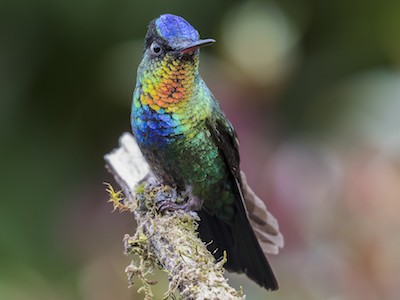
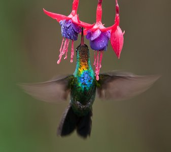

Wow! Based on your answers... You share similarities with a Firey-Throated Hummingbird (Panterpe insignis)

The Fiery-throated Hummingbird is a beautiful, stoic, solitary and patient bird. These birds don't show much emotion and can become agressive occasionally when it comes to territory, mainly during times when not many blossoms are available. Otherwise, males have been known to even share their food sources with females and share bird feeders with eachother as they pass through town. These hummingbirds are not very social, only comming together to mate or share food, they don't even migrate in groups. Like the Fiery-throated Hummingbird, you are a stoic and patient person who perfers to be alone especially when it comes to dealing with feelings or grievances and may even snap at people when they push you to open up.
Want to learn more about this species? Click the Feather!

Click on Ceasar to Restart!